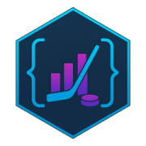

Statistics & Data Science and Computer Science student building hockey analytics tools that turn messy data,
tracking signals, and modeling ideas into decision-ready insight.
At Connecticut College, I am part of the Data, Information & Society Pathway, hold a 4.00 GPA, and will join the
NHL as a Summer 2026 Stats R&D intern. My work sits at the intersection of sports analytics, transparent
modeling, and communication, and I like end-to-end projects: scraping and cleaning difficult data, engineering useful
features, building interpretable models, and then shipping those results through apps, packages, reports, and
presentations that other people can actually use.
PortraitConnecticut College class of 2028, focused on hockey analytics, modeling, and public-facing tools.
Summer 2026Joining the NHL as a Stats Research & Development intern after being selected as 1 of 2 interns from 550+ applicants.
Career Profile
What I am trying to build
I want to work in sports analytics and research environments where modeling is useful because it sharpens judgment,
not because it looks impressive. That means building tools that are technically strong, transparent about assumptions,
and still understandable to coaches, analysts, and broader public audiences. Hockey is my main lens, but the broader
question is about data authority: who has access to richer information, how that shapes public understanding, and how
we can design models that clarify rather than oversimplify.
Why This Pathway
Why Data, Information & Society fits
The Data, Information and Society Pathway
is the right home for my interests because it is not just about analysis. It is about interpretation, ethics,
communication, and the social consequences of what data makes visible or hides. In hockey analytics, those issues are
concrete. Public models often summarize performance with authority, even though they are limited by data access,
modeling choices, and communication shortcuts. That tension is exactly what I want to study.
Future goals
I want this pathway to connect my coursework, internships, and independent hockey projects into one coherent direction.
Career
Sports analytics research
My main goal is to work in an R&D or analytics role where I can build models, pipelines, and communication tools
that directly support decision-making in sports.
Academic
Tracking and computer vision research
I want to keep pushing from event-level public metrics toward tracking-based and computer-vision-based approaches
that better capture spacing, access, and off-puck intelligence.
Personal
Accessible public tools
I care about making technical work usable. That means continuing to publish packages, dashboards, and explanatory
materials that help other students, analysts, and fans learn from the same data.
Selected works
These projects show the kind of work I want this portfolio to represent: public-facing tools, applied modeling, and
research questions that connect technical design with real interpretation.

nhlscraper
A public R package for scraping, cleaning, and visualizing NHL and ESPN data. It wraps 125+ endpoints, has
surpassed 3,000 downloads, and was added to the SportsAnalytics CRAN Task View after growing out of
reverse-engineering hidden hockey APIs.
An interactive hockey analytics application for exploring skater and goalie profiles, contract scenarios, expected
goals, downloadable cards, and data exports. It has reached 650+ users and is my main platform for turning
modeling work into something people can explore directly.
A coach-friendly metric for established 5v4 offensive-zone power plays that combines non-puck-carrier threat,
coverage geometry, and short-horizon decision windows to find exploitable mismatches. In validation, AEM/st
correlated with power-play goals per 60 at roughly 0.45 and added signal beyond xG/60.